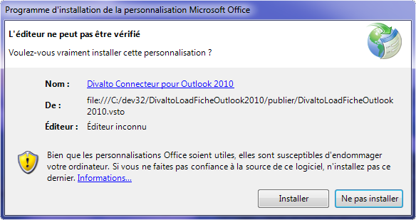

Sur un poste où Harmony Power Foundation est installé, exécutez le fichier x:\divalto\Internet\LCWebService\index.html et cliquez sur le bouton Installer le connecteur Outlook :

Remarque : Ce choix installe aussi la dernière version de DivaltoLoadFiche.dll dans x:\Divalto\Sys (le connecteur fait le lien entre Outlook et cette dll).